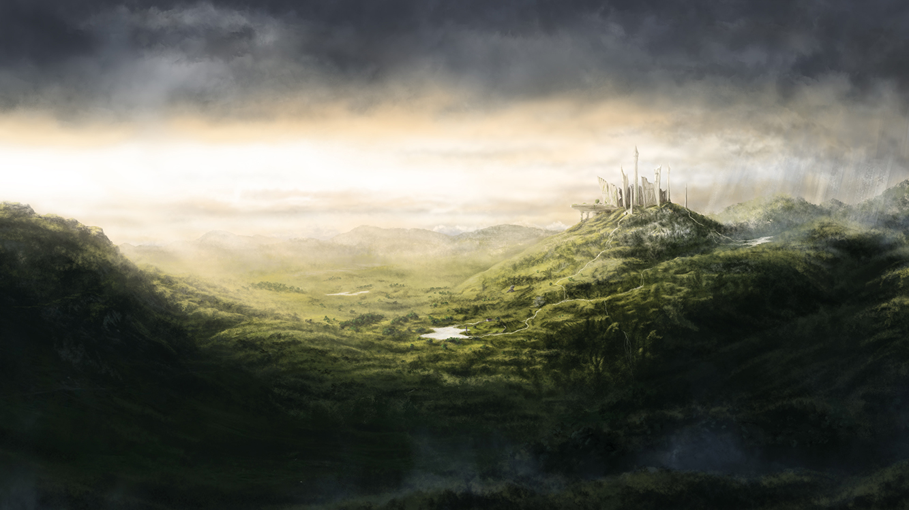
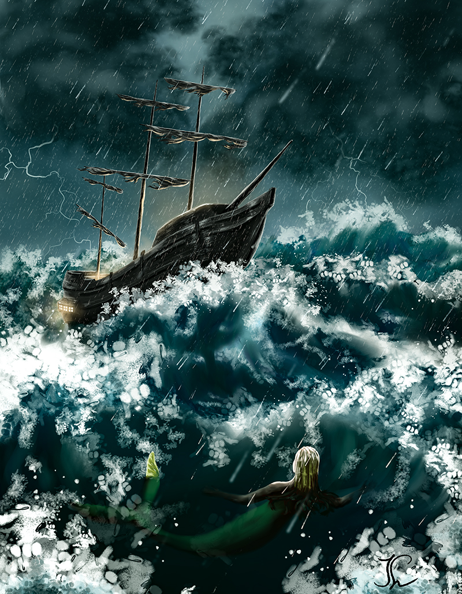

Exploring Digital Art
I made this artwork back in 2019, when I was working on a series of digital art pieces to figure out what kind of style suited me most. Mysterious places and subjects have captured my attention since I was a kid. I loved the abandoned gardens close to my house and the landscape of rural Hungary.
The Elephant Riders started out as a trial. I saw a photo of a majestic elephant on Pinterest and I imagined it being way bigger and someone riding it. I thought the elephant had to look different, ancient and damaged through the time but though and wise too. I wrote a short text about what life would be living on a giant elephant that ignored the people living on top of it, like the little fish that cling to big sharks. The people where busy keeping the elephant clean and repairing their house as it continuously broke down because of the movements.
The two other artworks on the right where made a little while before The Elephant Riders and helped me better understand light, colors, composition and most of all mood. I was not certain about the tools and how to achieve the right effect so it mostly consisted of trial and error for hours, adding layer on layer until I was satisfied with how it looked.
This is also one of the reasons I don’t like digital painting that much anymore. There’s a lot of ways to get things right and it allows you to just put in enough hours until it kind of works. With ink on paper, there’s no Ctrl Z, no erasing. You need to understand values and work with them from the beginning which helps with clarity and valuing each stroke. Nevertheless, I’m proud of these artworks and how they have turned out.
Do you like The Elephant Riders and want it on your wall?

